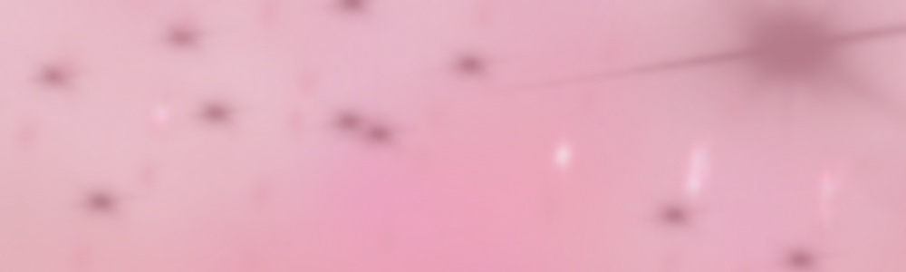
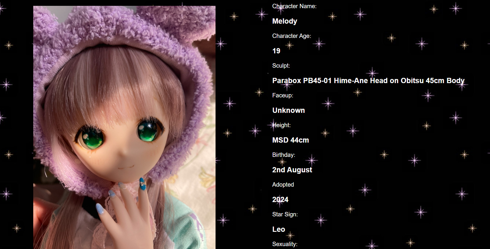
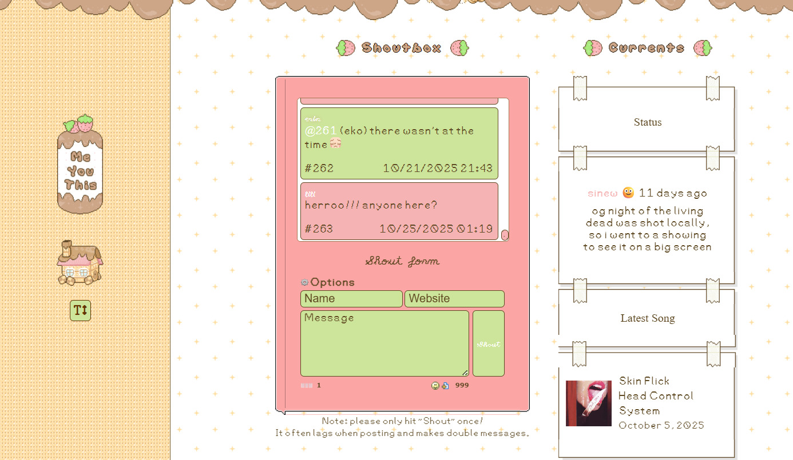
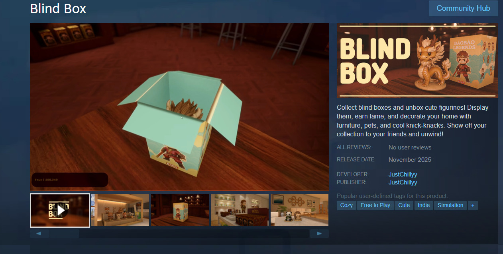

Comparative Analysis

Cute Bells by Sonican -
Cute Bells by Sonican -
Cute Bells by Sonican -
Cute Bells by Sonican -
Comparative Analysis
For my interactive narrative project, I aim to create a website that educates users about Sonny Angels while also allowing them to experience the thrill of opening a blind box. While researching ideas, I looked for websites that had a cute and personal vibe since that matches the look I want.
One site that really inspired me was Mermaidgrey by Mermaidgrey. I liked how she introduces each of her dolls and lets the user learn about them in a soft and story-focused way. It reminded me of how I want each Sonny Angel to have its own little description so users can get to know the different series.


I also explored Strawberry Gashes by Gen Lissa. Her journal layout feels personal, almost like scrolling through someone’s thoughts and memories. I enjoyed how expressive the design was, and it made me think about how I can bring that same handmade and cozy feel into my own project. It made the website feel more like a personal space rather than just information on a page.

For the interactive part, I looked at blind box concepts like the Blind Box Game by Muhimrantar2002 on Wordwall and Blind Box by JustChillyy on Steam. I enjoyed the simple idea of choosing a box and receiving a random figure. Even though those sites use more advanced tools, the idea of surprise is something I can still recreate with basic HTML and CSS.

Some of the sites I found felt a little messy or crowded, so that made me realize I want my layout to stay clean and easy to follow. I want to mix the cute and personal aesthetic with simple interactions so it still feels fun without being overwhelming. Overall, these websites helped me figure out the direction I want to take and how I can create an interactive and informative Sonny Angel experience.